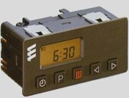

Fault code reading
If the control unit detects a fault when the heater is turned on, or during operation, the active fault code is shown (F + 2 digits) within 15 seconds in the timer's display.
When fault codes F15 and F50 are shown, the control unit is put in blocked mode. In order to release the block the fault codes must be erased.
Erasing fault codes and releasing the blocked mode: Press the heater button. F15 or F50 will be shown in the display. Press the clock button, keep it pressed and press the P button within 2 seconds. Turn on the ignition (15.00 hrs). When - –:- flashes in the display, the heater is connected and disconnnected.

Fault codes:
10 Disconnection: overvoltage.
11 Disconnection: undervoltage.
12 Overheating.
14 Possible overheating.
15 Operational block.
17 Emergency stop, overheating.
20 Glow plug breakdown.
21 Glow plug short circuit.
30 Combustion air fan rpm.
31 Combustion air fan open circuit.
32 Combustion air fan short circuit.
38 Relay vehicle fan open circuit.
39 Relay vehicle fan short circuit.
41 Water pump open circuit.
42 Water pump short circuit.
47 Fuel pump short circuit.
48 Fuel pump open circuit.
50 Operational block for too many start attempts.
51 Time exceeds cooling phase.
52 Safety time exceeded.
53 Flame fault (major).
56 Flame fault (minor).
60 Temperature sensor open circuit.
61 Temperature sensor short circuit.
64 Flame sensor open circuit.
65 Flame sensor short circuit.
71 Overheating sensor open circuit.
72 Overheating sensor short circuit.
90 Control unit fault.
91 External noise voltage.